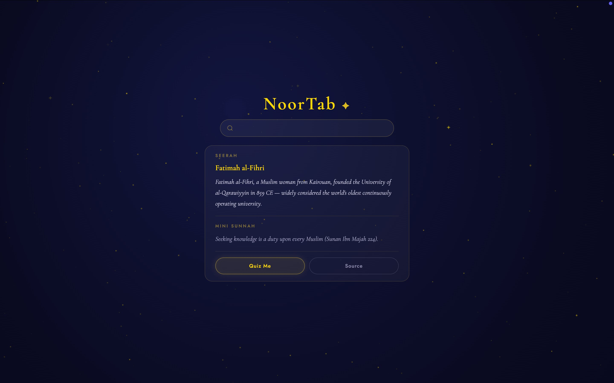

The idea
NoorTab brings daily reminders, focus tools, and Islamic content into a browser’s new-tab page. I wanted that everyday moment to feel a little more intentional.
My role
I worked on the product direction and development, from defining the experience and organizing features to building the Chrome extension.
The experience
The interface brings reminders and focus tools together in a simple layout. The aim was to make the content easy to use without turning every new tab into a crowded dashboard.
The build
NoorTab uses Chrome’s Manifest V3 extension format. Working within the browser environment connected the product idea with the technical work needed to make it function.
What I took away
This project gave me a chance to work across the product idea, interface, and implementation, rather than treating them as separate pieces.
